TPR's Middle America Tour
Nickelodeon Universe
Adventureland
Worlds of Fun
Silver Dollar City
City Museum
Six Flags St. Louis
Holiday World
Indiana Beach Six Flags Great America Mt. Olympus Timber Falls Valleyfair
All right. For our next park, we are being taken to the middle of nowhere.
Yup. We're going to Indiana Beach today.
 We're here!!! =)
We're here!!! =)
 Is this really Indiana Beach's parking lot? It looks more like a dirt lot in the middle of nowhere.
Is this really Indiana Beach's parking lot? It looks more like a dirt lot in the middle of nowhere.
 Well, I guess I should just trust the sign and see what happens when I walk through the gate.
Well, I guess I should just trust the sign and see what happens when I walk through the gate.
Wow. We went from a cornfield to this in a matter of seconds. Quite a big difference.
 First up, ERT on Lost Coaster. (AKA, What the F*ck the Ride.)
First up, ERT on Lost Coaster. (AKA, What the F*ck the Ride.)
 Apparently, this was originally a dark ride, but then Indiana Beach wanted another coaster, so they converted this to a roller coaster. Yeah, I can totally see the dark ride in this.
Apparently, this was originally a dark ride, but then Indiana Beach wanted another coaster, so they converted this to a roller coaster. Yeah, I can totally see the dark ride in this.
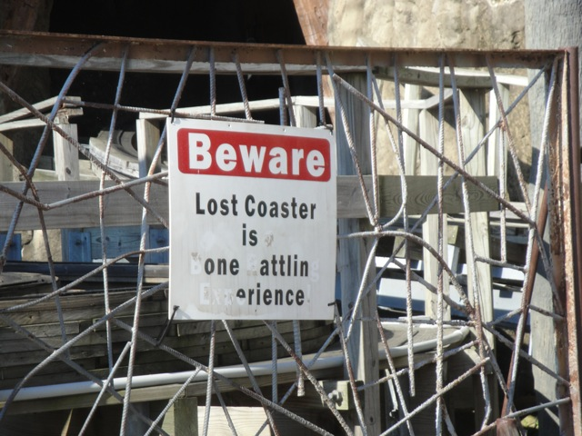
What the F*ck the Ride is so confusing that it'll make your bones rattle.
 Have fun you guys.
Have fun you guys.
 Continuing on with ERT, we're now at Cornball Express.
Continuing on with ERT, we're now at Cornball Express.
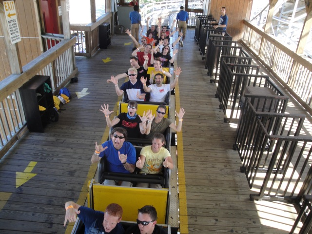
EXCITEMENT GUYS!!!!!!!!
 Cornball Express is an awesome woodie.
Cornball Express is an awesome woodie.
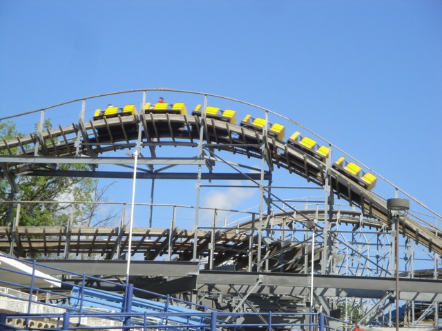
The ride is filled with good airtime and laterals.
 Yeah. This is much better than Lost Coaster.
Yeah. This is much better than Lost Coaster.
 Ok. ERTs over. Now it's time to go on a credit run. First up, Tig'rr Coaster.
Ok. ERTs over. Now it's time to go on a credit run. First up, Tig'rr Coaster.
 For such a small ride, it packs quite a punch.
For such a small ride, it packs quite a punch.
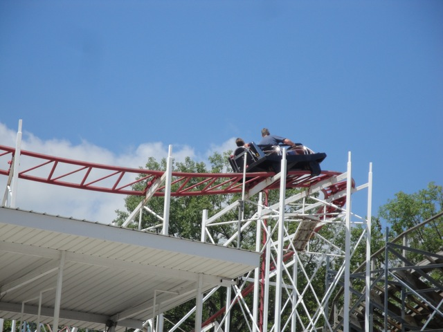
Yeah, this ride is good.
 Well, we should definetly get this out of the way next.
Well, we should definetly get this out of the way next.
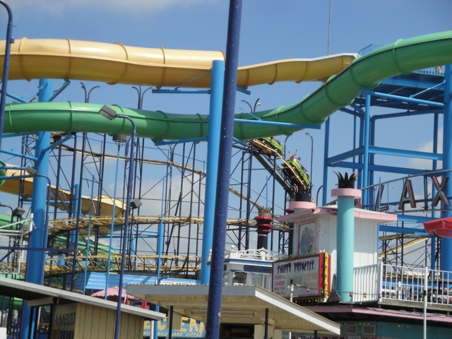
It looks A LOT like Backdraft from the early years of the Ventura County Fair. Not a good sign.
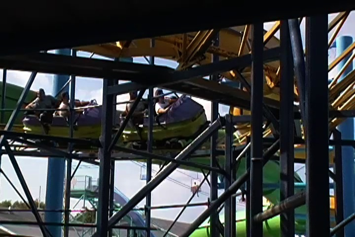
Dude!! This thing was awesome! If you sit in the back, you actually get some great airtime!!
 Next up, Hoosier Hurricane. This ride is parrticuarly special to me...
Next up, Hoosier Hurricane. This ride is parrticuarly special to me...
Because this was my 200th credit!!!!
Hey!!! Come back!! I promise you that my 200th Credit Party will be alot less scary than I am!!!
 Anyways, while Hoosier Hurricane wasn't a bad woodie or anything, Cornball is simply much better.
Anyways, while Hoosier Hurricane wasn't a bad woodie or anything, Cornball is simply much better.
Well, at least my 200th credit isn't nearly as bad as my 100th Credit.
 Luckily, Steel Hawg opened for us right after we got all the other credits.
Luckily, Steel Hawg opened for us right after we got all the other credits.
 Wow. That looks like it was designed with a coat hanger.
Wow. That looks like it was designed with a coat hanger.
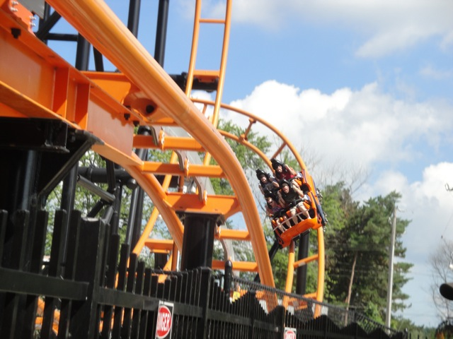
So how was Steel Hawg?
 Steel Hawg kicks ass, and I personally can't decide whether this or Cornball should be Indiana Beach's star attraction.
Steel Hawg kicks ass, and I personally can't decide whether this or Cornball should be Indiana Beach's star attraction.
Aww. The Double Shot is closed. =( Luckily, the other flats were open.
Indiana Beach has one of my favorite park settings ever. The whole place has a lake smell that I remembered smelling during my vacation at Lake Naciamento.
The good news. Indiana Beach has flyers! =)
The bad news. You can't snap them. =(
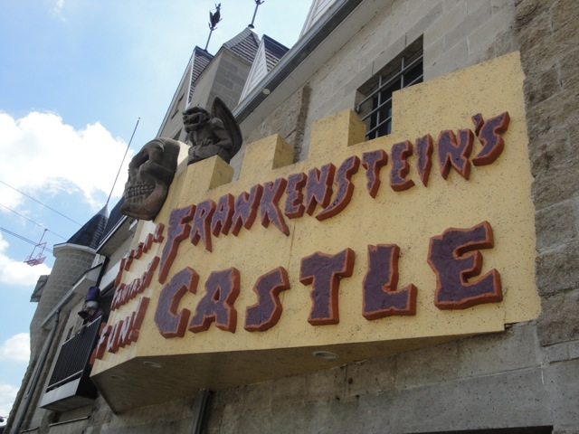
Ok, I simply have to say this. If you're at Indiana Beach, DO THIS!!!!!! IT KICKS ASS!!!!! Now, we usually don't do upcharges at Incrediblecoasters, but this is more than worth the price you pay.
Good thing we got on Lost Coaster when we did.
While Indiana Beach doesn't necesarrily have any amazing state of the art flat rides, the flat rides they do have, while standard, are definetly the best of their kind.
Though this was my first paratrooper, so I can't compare it to anything.
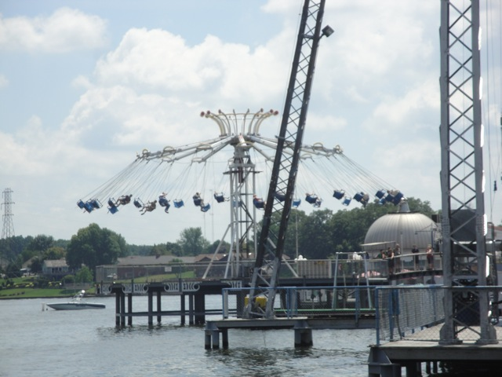
These chairswings kick ass. They have a great setting over the water and they sway giving the illusion of falling into the lake.
And yeah, their Falling Star is also great.
 And now, it's time to get some shots from the Ferris Wheel.
And now, it's time to get some shots from the Ferris Wheel.
You get some great Hoosier Hurricane Shots from up here.
 Indiana Beach from the sky.
Indiana Beach from the sky.
Yeah, it's now time for Music Express. (It wasn't that musical.)
 Ok. Now if there's any problems I have with Indiana Beach, this is where they are. Indiana Beach is has the STRICTEST camera policies ever. And I don't mean they're simply not POV Friendly, I mean these people here are like the f*cking Third Reich about cameras here. I'm suprised they don't show a swastika everytime they see your camera. This place makes Cedar Point look like a POV Friendly park. "Now you're probably wondering, how is this possible?" Well, they don't allow loose articles on anything. And I don't just mean rollercoasters. I mean EVERYTHING!!!!!!! They don't even let you take your stuff with you on the Skyride. THE F*CKING SKYRIDE FOR CRYING OUT LOUD!!!! EVEN CEDAR POINT LETS YOU FILM ON THE SKYRIDE!!!!! WHAT THE F*CK!!!!!!!!! Now while I don't agree with POV policys, I can at least understand the logic of it on rollercoasters and now respect those policies. But a skyride that doesn't go fast at all and is meant for photography. And I'm not just upset at the no loose articles rule because it robbed me of what would be some extremely badass shots of Indiana Beach. But if you are carrying anything with you, and I mean ANYTHING, you have to leave it with the ride operator. Now the point of the skyride is to take you from one side of the park to the other side of the park. But if you just gave your stuff to the ride operator because of the no loose articles even on the f*cking skyride rule, then unless you want to leave your most likely valuable posessions with the ride operator and most likely forget about them, then you have to get back in line so you can get back on the skyride so you can get your stuff from the ride operator, which you then have to walk to the other side of the park because you'd just form a big fat time loop if you try the skyride again, but then that defeated the entire purpose of even going on the god damn skyride. So because of a no loose articles rule, you just wasted 30 minutes of your day. So please don't go on the skyride at Indiana Beach. It is simply awful. If you are reading this Indiana Beach, please remove this stupid and pointless rule. It robs me of some great photography and robs anyone who happens to be carrying anything their precious time at your park. Hope you see the errors of your ways. From Incrediblecoasters.
Ok. Now if there's any problems I have with Indiana Beach, this is where they are. Indiana Beach is has the STRICTEST camera policies ever. And I don't mean they're simply not POV Friendly, I mean these people here are like the f*cking Third Reich about cameras here. I'm suprised they don't show a swastika everytime they see your camera. This place makes Cedar Point look like a POV Friendly park. "Now you're probably wondering, how is this possible?" Well, they don't allow loose articles on anything. And I don't just mean rollercoasters. I mean EVERYTHING!!!!!!! They don't even let you take your stuff with you on the Skyride. THE F*CKING SKYRIDE FOR CRYING OUT LOUD!!!! EVEN CEDAR POINT LETS YOU FILM ON THE SKYRIDE!!!!! WHAT THE F*CK!!!!!!!!! Now while I don't agree with POV policys, I can at least understand the logic of it on rollercoasters and now respect those policies. But a skyride that doesn't go fast at all and is meant for photography. And I'm not just upset at the no loose articles rule because it robbed me of what would be some extremely badass shots of Indiana Beach. But if you are carrying anything with you, and I mean ANYTHING, you have to leave it with the ride operator. Now the point of the skyride is to take you from one side of the park to the other side of the park. But if you just gave your stuff to the ride operator because of the no loose articles even on the f*cking skyride rule, then unless you want to leave your most likely valuable posessions with the ride operator and most likely forget about them, then you have to get back in line so you can get back on the skyride so you can get your stuff from the ride operator, which you then have to walk to the other side of the park because you'd just form a big fat time loop if you try the skyride again, but then that defeated the entire purpose of even going on the god damn skyride. So because of a no loose articles rule, you just wasted 30 minutes of your day. So please don't go on the skyride at Indiana Beach. It is simply awful. If you are reading this Indiana Beach, please remove this stupid and pointless rule. It robs me of some great photography and robs anyone who happens to be carrying anything their precious time at your park. Hope you see the errors of your ways. From Incrediblecoasters.
Anyways, looks like TPR is going to have a Fascination takeover.
 I however did not partake in any Fascination playing due to me being broke from buying that new video camera.
I however did not partake in any Fascination playing due to me being broke from buying that new video camera.
All right. Time for our official dinner at the Skyroom.
Why is the Sky Room only 1 story above the ground and yet miles below the ozone layer? Some spot your skyroom is in. It's practically on the ground.
 In all seriousness, the Skyroom actually served us some awesome food. Thank you Indiana Beach. You guys are awesome. (With the exception of that little skyride problem.)
In all seriousness, the Skyroom actually served us some awesome food. Thank you Indiana Beach. You guys are awesome. (With the exception of that little skyride problem.)
Hey Six Flags Magic Mtn!! Guess what I can do on the bumper cars at Indiana Beach?
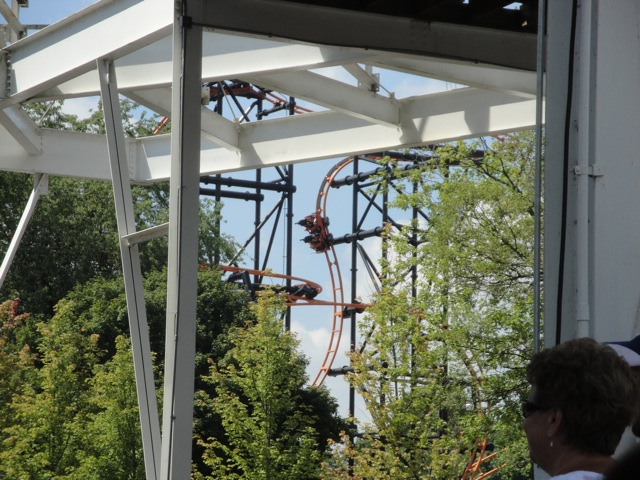
Anyways, back to Steel Hawg and it's beyond verticalness.
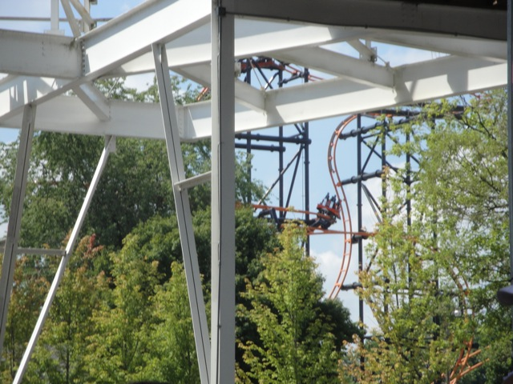
Outside banking is awesome!!! If you made a good helix with outside banking, I'd probably orgasm. (Nah, that'd only happen if they stuck it on a Maverick clone with an outward banked helix attached to it.)
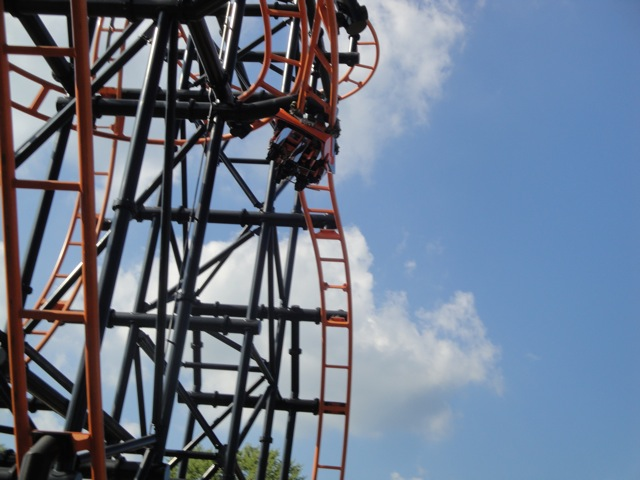
In all seriousness, Steel Hawg is awesome and I hope the S&S El Loco concept grows.
 Hmm. I wonder if those retards who say that V2's inline twist is not an inversion also not count Steel Hawg's inline twist as an inversion because, *gasp* it too is at an incline. *rolls eyes* F*cking Idiots.
Hmm. I wonder if those retards who say that V2's inline twist is not an inversion also not count Steel Hawg's inline twist as an inversion because, *gasp* it too is at an incline. *rolls eyes* F*cking Idiots.
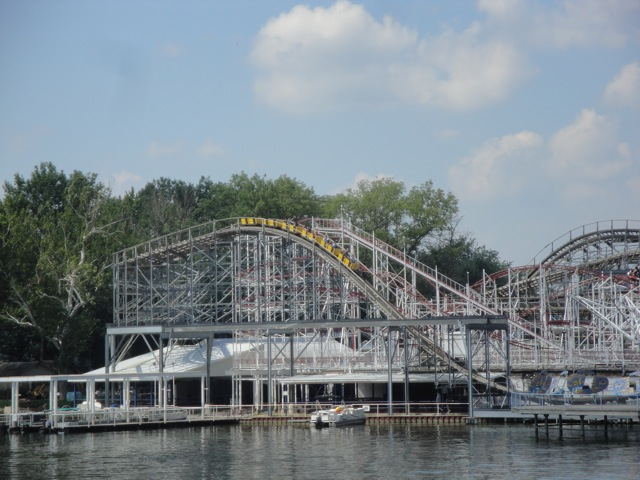
One last ride on Cornball Express before we head on back to the bus.
Good news for everyone. The people who played Fascination won a bunch of prizes and decided to give everyone on the bus a little camera shaped squirt gun. Thanks guys.
Six Flags Great America
Home